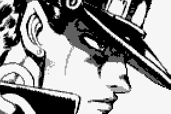
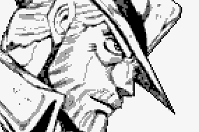
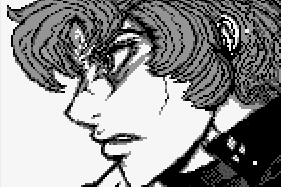
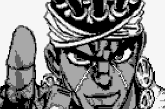

Stardust Crusaders
The third part of JoJo's Bizarre Adventure, serialized in Weekly Shōnen Jump from March 1989 to April 1992. Originally titled as JoJo's Bizarre Adventure Part 3 Jotaro Kujo: Heritage for the Future, the arc is preceded by Battle Tendency and spans 152 chapters.

The protagonist of Stardust Crusaders and the grandson of Joseph Joestar through Holly. He is depicted as a rough delinquent with a kind heart as he journeys to Egypt with his grandfather and allies to defeat Dio and save his mother's life. His Stand is Star Platinum whose power is incredible strength, speed, and precision, and later the ability to stop time.

Joseph is the protagonist of Battle Tendency and the grandson of Jonathan Joestar. He has acquired the vine-like Stand Hermit Purple which he uses to fight or perform predictions using electronic equipment such as cameras and television sets (though doing so requires destroying said equipment) as he leads the group of men to confront Dio in Egypt to save his daughter, Holly Kujo.

A biracial (half-Japanese) delinquent who lives an ordinary life until the Joestar Family's old enemy, DIO, returns. Seeing Jotaro's mother Holy falling ill because of DIO, and heeding Joseph Joestar's call, he travels to Egypt in order to save his friend's mother, experience an unusual life and keep his family safe. He is a Stand User and wields the long-range Power Type Ocean Blue

An ally of Joseph and Jotaro from Cairo, a fortune teller who narrowly escaped from Dio and helped Joseph understand Stands. His Stand is Magician's Red, which allows him to manipulate fire, usually in the shape of the ankh. Magician's Red's signature move is Crossfire Hurricane, which sends out several fiery ankhs at the target.
Originally sent by Dio to kill Jotaro under mind control, Jotaro save his life and Kakyoin pledges to work with Jotaro to kill Dio. His Stand is Hierophant Green, which he can shrink down to enter people and control them from the inside, produce strange tendrils that can thrash people, or perform a long-ranged attack using blasts of green energy known as Emerald Splash.
Initially under Dio's control, Polnareff attacks Jotaro's group during their stay in Hong Kong before being defeated by Avdol. He then joins them on the hunt for Dio in order to find his sister's murderer, J. Geil. His Stand is Silver Chariot, an armored knight wielding a rapier that can boost its blinding speed further by casting off its armor while producing a series of afterimages.
A Boston Terrier ally of Jotaro's who thwarted the New York animal control officers for years until Avdol managed to capture the dog for the Speedwagon Foundation. To keep him calm, the Speedwagon Foundation and anyone handling him must give him coffee-flavored chewing gum as a treat, otherwise he will disobey all orders. His Stand The Fool takes the form of a part-biological part-mechanical being with two forelegs and two wheels instead of hindlegs, and can even form wings to allow Iggy to glide away from danger.